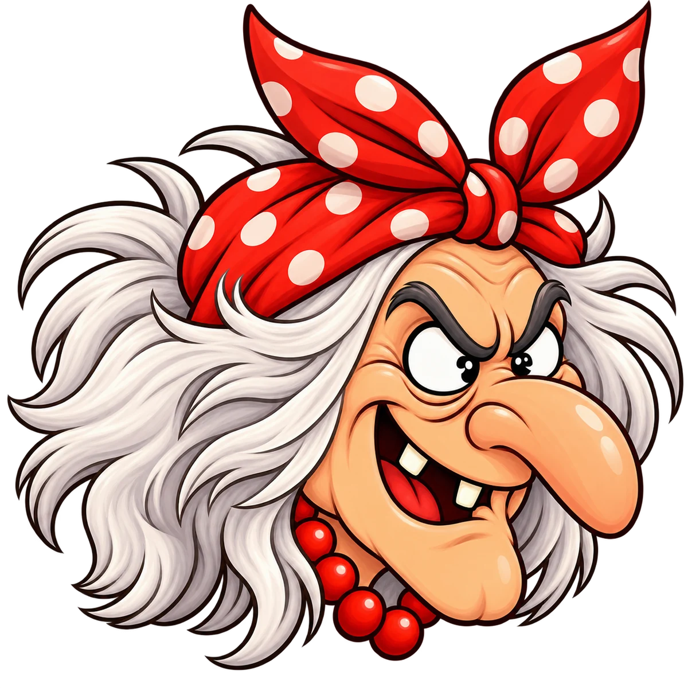
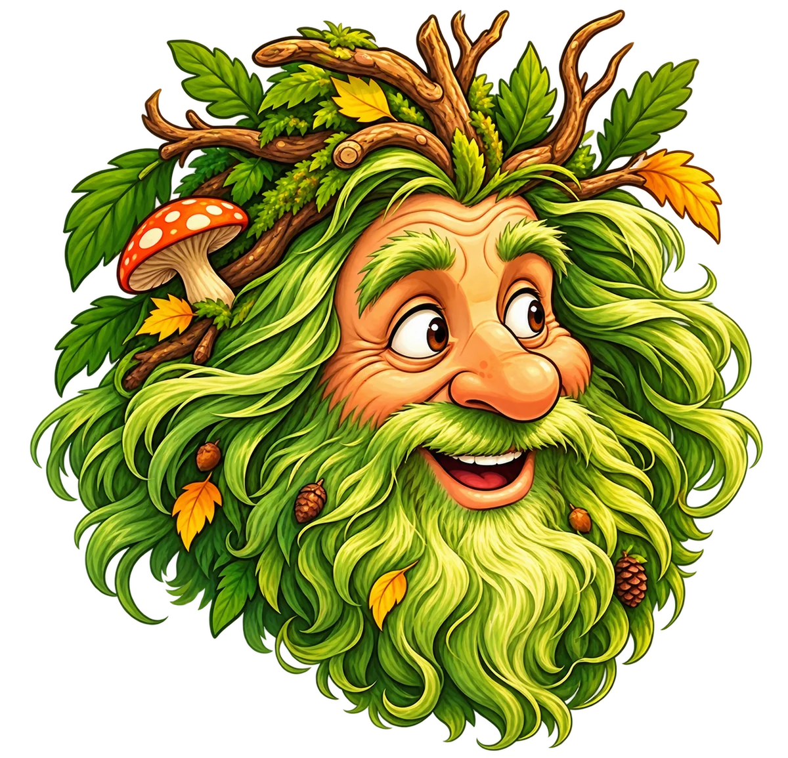
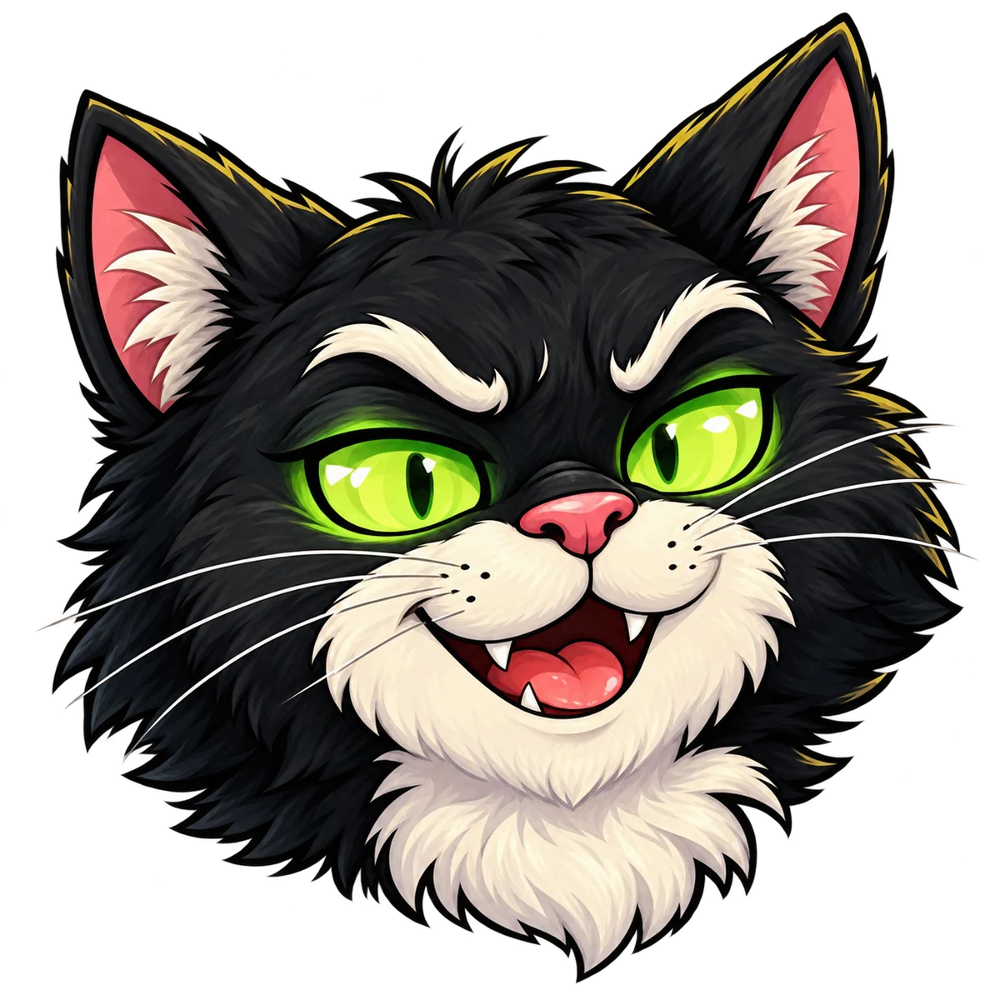

МАТЕМАТИКА
Баба Яга
Примеры и задачки. Её не так-то просто перехитрить!
01 / 04Знания — наше сокровище.
Бросайте кубик, отвечайте на вопросы и спасайте школу от сказочных злодеев. Здесь учёба превращается в приключение, а победа зависит от всей команды.

У каждого сказочного противника — свой школьный предмет. Злодеи проверят ваши знания, но победить их можно вместе.

Примеры и задачки. Её не так-то просто перехитрить!
01 / 04Слова и правила — у каждой головы свой вопрос.
02 / 04
Проверит, хорошо ли вы знаете природу и мир вокруг.
03 / 04
Заговорит по-английски. Сумеете ему ответить?
04 / 04В основе игры — поле, кубик, вопросы и общая цель. Без знаний и взаимовыручки до сокровища не добраться. Маршруты на поле пока проектируются.
Игрок перемещается по клеткам поля и встречает нового сказочного противника.
Задание зависит от злодея, а сложность определяется по правилам игры.
Правильные ответы отбрасывают злодеев назад. Ваша общая задача — добраться до сокровища раньше них.
Не нужно каждый раз придумывать задания с нуля. Выберите класс и предмет — библиотека случайным образом соберёт вопросы по разным темам.
Постоянный доступ по коду с игрового поля. Библиотека сейчас в стадии прототипа.
Пара кликов — и вопросы готовы к печати.
На игровом поле будет указан код для входа в библиотеку. Никакой подписки или ежегодной платы. Купили игру — пользуетесь материалами.
Игровое поле · маршруты пока не нанесеныМы готовим настольную игру к выпуску. Когда появятся карточки товара на маркетплейсах, ссылки будут здесь.
Мы не принимаем оплату на этом сайте.